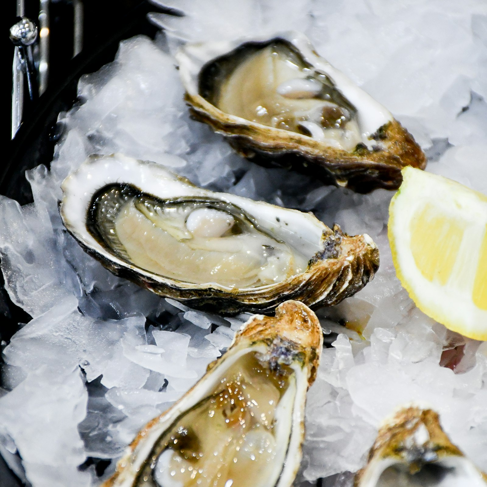
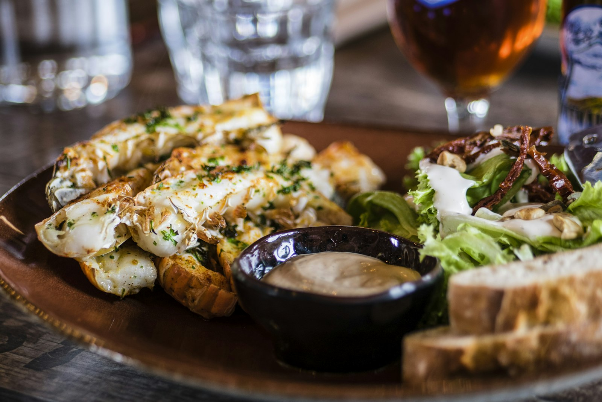

Huîtres de Cancale n°3
Vinaigre d'échalote fumé, pain de seigle au beurre demi-sel. Les 6.
12 €
Bistrot terre & mer — Rennes
« La mer au feu. »

Au cœur de la rue Saint-Georges, notre cheminée ouverte crépite midi et soir. Poissons de ligne de la criée de Saint-Malo, légumes de producteurs d'Ille-et-Vilaine, viandes fermières : tout passe par la braise de chêne breton.
Une cuisine brute et précise, où la fumée souligne l'iode et où chaque assiette raconte la rencontre de la terre et de la mer.
Maël & Louane
Notre histoireUn aperçu de notre carte de saison, entre iode et fumée.

Vinaigre d'échalote fumé, pain de seigle au beurre demi-sel. Les 6.
12 €

Beurre d'algues, aïoli fumé, jeunes pousses. Selon arrivage de la criée.
24 €

Grand cru fondant, glace au lait ribot, caramel coulant, sarrasin soufflé.
10 €
« Cuisiner le produit breton comme sur les grèves :Maël Kerhoas — Chef & co-fondateur
au feu, simplement. »
« Le turbot entier à la braise, à partager à deux : un souvenir de vacances en plein centre de Rennes. Service aux petits soins. »
« La cheminée en salle, l'odeur du feu de bois, les accords cidre proposés par Louane… On y retourne dès que possible. »
« Formule midi imbattable pour la qualité. Produits ultra-frais, équipe passionnée qui prend le temps d'expliquer chaque plat. »
27 rue Saint-Georges
35000 Rennes
Métro République / Sainte-Anne
Mardi – Samedi
12h00 – 14h00 · 19h00 – 22h00
Fermé dimanche & lundi